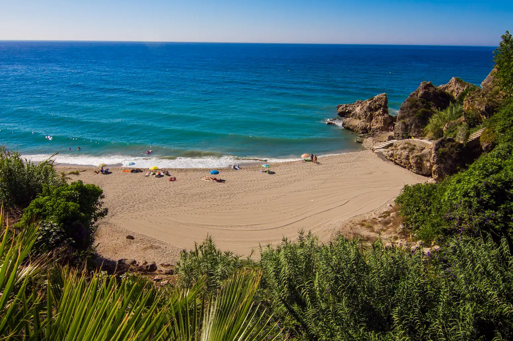
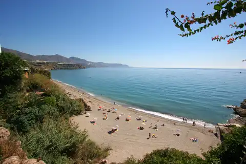
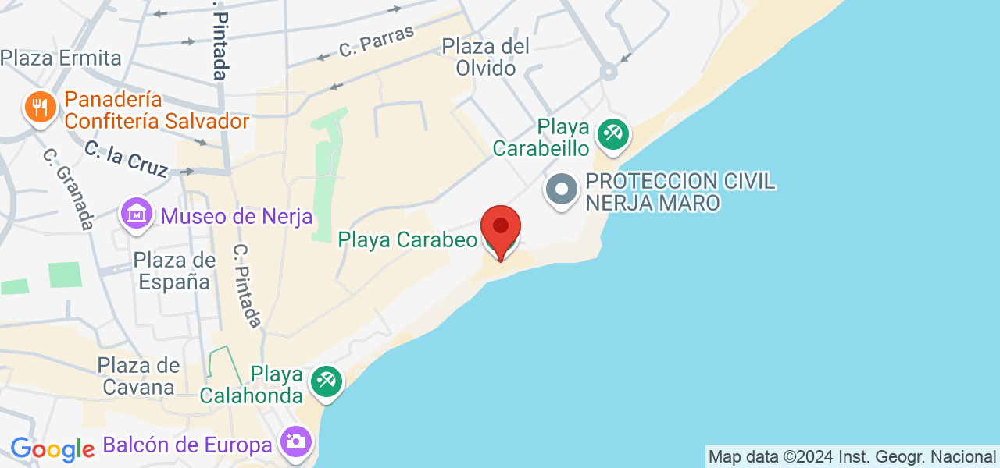

La playa de Carabeillo se trata de una cala de reducidas dimensiones a la que se accede por una escalinata que sale desde el “Mirador del Bendito”, situado al final de calle Carabeo, o por la Playa Burriana, si la marea lo permite. El acceso se debe hacer obligatoriamente a pie.
 La playa Carabeillo es una pequeña playa de Nerja, una cala mucho más tranquila que Playa Burriana, y es el inicio o final de una antigua ruta costera a Playa de Calahonda que dispone de servicio de limpieza, duchas y vigilancia. Es una de las playas de Nerja más populares debido a su ubicación en una zona tranquila y su belleza natural. Es una playa de aguas cristalinas y arena fina que cuenta con todas las comodidades necesarias para disfrutar de un día de playa, como duchas, servicios, restaurantes y bares.
La playa es bastante pequeña y suele llenarse rápidamente en temporada alta, por lo que es recomendable llegar temprano para asegurarse un lugar en la arena. También es un lugar popular para practicar deportes acuáticos, como el snorkel y el kayak.
CARACTERÍSTICAS
Composición: Arena y grava
Color de la arena: Oscuro
Grano de la arena: Medio
Condiciones de baño: Oleaje moderado
SERVICIOS
Accesible desde autobús
Aparcamiento
Limpieza de Playas
Duchas
Policia Local
Papeleras
